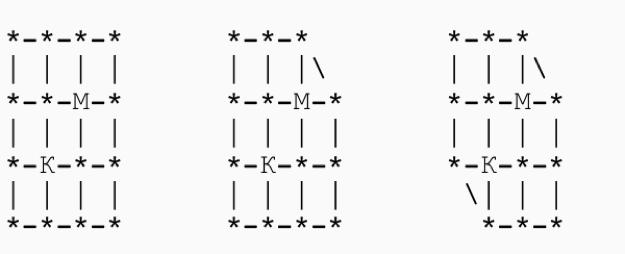

A cat tries to catch a mouse in labyrinths A, B, and C. The cat walks first, beginning with the node marked with the letter "K". Then the mouse $($ from the node "M"$)$ moves, then again the cat moves, etc. From any node the cat and mouse go to any adjacent node. If at some point the cat and mouse are in the same node, then the cat eats the mouse. Can the cat catch the mouse in each of the cases A, B, C?

A B C
In the cases A, B, it is sufficient for the mouse to walk to a node centrally symmetric to the node on which the cat is located each time. $($ For case A, it's still simpler. $)$ If we colour the nodes of the labyrinth in a chess colouring format, we see that the cat, after its turn, is always in a node with an opposite color to that of the node of the mouse, so it can not eat the mouse with any sequence of moves.
In case C we also consider the chess coloring of the nodes $($ see Fig. $)$. First, the cat goes to node M. If the mouse during this time "passes" on the diagonal segment, the cat catches it with the next move.
Otherwise, the cat itself goes diagonally and returns to M. If the mouse is not yet eaten, at that moment it is standing on a black node and must go to a white one. But there are only four white nodes, which have not yet been visited by the cat. Two of them are angular, if the mouse gets into one of them, the cat "clamps" it in this corner and eats it on the next move. Otherwise, the cat makes a move towards the mouse, and the mouse is forced to retreat into the black corner, where the cat will catch it in the next turn.
In the labyrinths A and B it can not, but in C it can.
points: 1 + 3 + 1